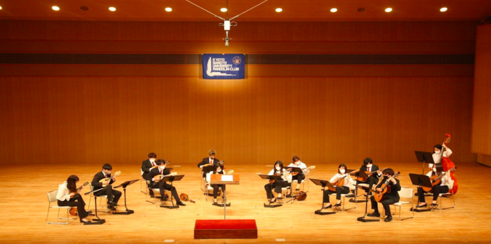

新入部員募集
京都産業大学マンドリンクラブでは、いつでも新入部員を大募集しています！ 私たちは、マンドリン属というイタリア生まれの4種類の弦楽器にギターとコントラバスを加えたオーケストラ形式で演奏を行なっています。 部員には音楽・楽器初心者もいるので、興味のある方は課外活動棟2FBox17へ越しください。
Tweets by ksumandolinお知らせ
京都産業大学マンドリンクラブ第49回定期演奏会が無事に終了しましたことをお知らせします。 関係各位およびご来場の皆様にはご尽力いただき誠にありがとうございました。 京都産業大学マンドリンクラブ一同は今後とも活動を行いますのでご声援をいただけたら幸いです。
定期演奏会の予定
cominng soon